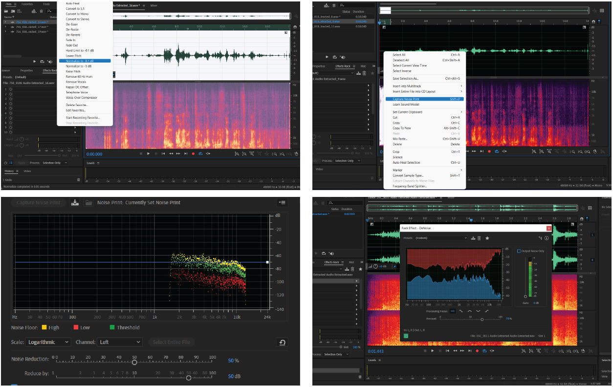
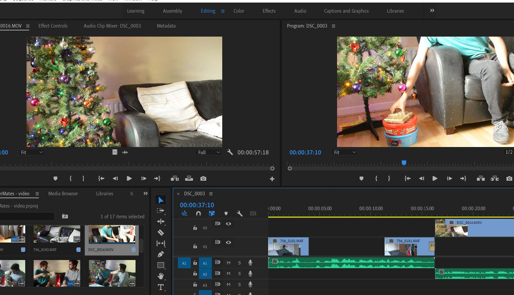

Product Video Story
Worked in group to script, record and edit a product demo video for Bartermates.
Introduction
Barter Mates focused on creating a design intervention to alleviate the financial stresses of student living by facilitating a bartering(swapping) local economy with a community building ethos. As a group we worked together to explore how to visually communicate this concept through video. Through brainstorming our ideas, and keeping key concepts of composition, editing and lighting in mind we discussed what and where we could record this video.
Planing video and equipment used
To begin the group project we met and discussed ideas, putting pen to paper to develop a storyboard. To develop a coherent storyboard,we first created a timeline of key elements to include for audience engagement. This timeline gave us a framework to communicate the concept of Barter Mates. The timeline begins by introducing a common issue or pain point, for this segment we agreed to script and record a scene. The design intervention and its features follow this segment, suggesting a solution to the viewer for the pain point previously set in motion.
Storyboarding
We booked out a Sony PMW-200 camera through the CSIS equipment checkout. As beginner users, we spent time getting to know the camera and how to shoot with it. We planned to shoot our video footage in 1080p as this could be achieved by each of the camera models we were using. We wanted to have multiple cameras for the shoot to ensure we captured multiple angles to create an engaging viewing experience. We decided to use the natural lighting of the space and documented how it moved and changed previous to shooting.
Equipment for shoot:
- Nikon D3200 DSLR + Nikon DX AF-S NIKKOR 18-55mm 1:3.5-5.6G Lens
- Zoom Handy Recorder H4n
- Sony PMW-200 Solid State Memory Camera - CSIS
- Protouch Vinten Tripod - CSIS
- iPhone camera
Recording Set-up & Shooting
We decided to shoot at one of our group member's home.The recording gear was taken to the location the day before the shoot to plan further shot locations and composition before recording day.
The lighting was mapped the day previous to the shoot. The light rises to the back of the house and fills the kitchen area first. It then moves to the front of the house by 1pm, changing the light in the living room. Wanting to make the most of natural lighting, this informed the scene timeline. We wanted the scenes to be bright and light but realistic. The point between ambivalent highkey lighting and moody low-key lighting. On set, we kept to the scheduled timeline to shoot video footage that made the most of natural lighting while keeping an eye on the white balance settings of the camera to adjust where necessary. No house lighting or additional lighting equipment was used, which we would revisit if we were to create further video projects.
Call sheet outlining details of shooting as per the movement of natural lighting
Composition
Aware of how the composition can be used to convey emotion we wanted to keep our scenes calm, light-hearted and familiar in tone to create an inviting atmosphere. Each scene was discussed in terms of camera angle, framing and mood. We kept the audience viewpoint in mind when determining the area to be covered in the shot and the camera positioning required to convey this.
When using multiple cameras to capture the one scene, we made use of the rule of continuity. We set up the action axis between characters while crafting each scene. In production we made sure not to cross this axis when filming a scene from several angles. Throughout the composition planning we used the storyboard and documented additional notes for scene transitions to be used in the post-production process.
Filmed each scene with two camera angles, focusing on the rule of thirds composition method
The final part of our production day focused on audio. We refined draft scripts for the social proof interviews and the general voiceover. We used a Zoom Handy Recorder H4n to record audio. This was done in pairs, one team member listened to the audio being recorded on earphones, while a second team member used the Zoom sheltered under a duvet. This method aids to filter out the echo and excess noise of recording in a quiet room, creating a soft shell cover for the audio. The audio clips captured in using this method were edited using Audacity.
Post production
Our post-production was divided into two teams, editing and resourcing. Both teams worked together to provide feedback to one another and to collaborate on decision making. The editing team initially spent time on the audio captured from our video camera. Adobe Audition was used to normalise the sound from the video footage and to capture the noise print of the audio
Adobe Audition being used to perform audio editing on recorded voiceovers
Video editing began by reviewing the footage recorded from each scene, the best of clips of each camera were selected and rough-cut edits such as cropping and zoom were used to emphasise compositional elements. Several transitional methods were utilised in the video editing process including cross-dissolve, gradient wipe and cross-fade. An rough-cut edit of our self-recorded material was created at first and shared with the group for feedback, some transitional elements were changed and a low background track was included. The focus then came to the downloaded footage for the social proof, features of the application and the final call-to-action segment. Transitional elements used previously were to be repeated to give a cohesive look and feel to the final video piece. A sample Barter Mates logo2, created previously, was used for both the intro and outro video scenes
Adobe Premiere Pro being used to perform video editing
Product Video
Click hereReflection
The key takeaway from completing this assignment is that planning, organisation and continuous feedback are essential elements of creating any video-based media. Storyboarding is the rock that ties the project together. From start to finish, it was a great resource to create, come back to and keep in mind throughout the entire process. We also found it useful to practice with the recording gear and the editing software pre-production to get a base line understanding of what is required to create a structured workflow.
In hindsight, spending more time with the recording gear on location could have aided the audio and lighting elements of the footage. The audio captured through camera was noisy and required quite some editing in postproduction to achieve a near usable take. If we were to shoot again we would mic-up the actors and capture audio on a separate device. Additional lighting could have been useful and improve the quality of the shoot. The call-sheet was a successful tool. It acted as a guide for the process of our shoot day to ensure we collected all the footage we required within the timeline we set out.
Overall, completing this assignment was a comprehensive learning experience. We have gained insight into the procedures necessary to produce a working demo-video from planning pre-production, technique onset and the organisational requirements for editing and post-production.